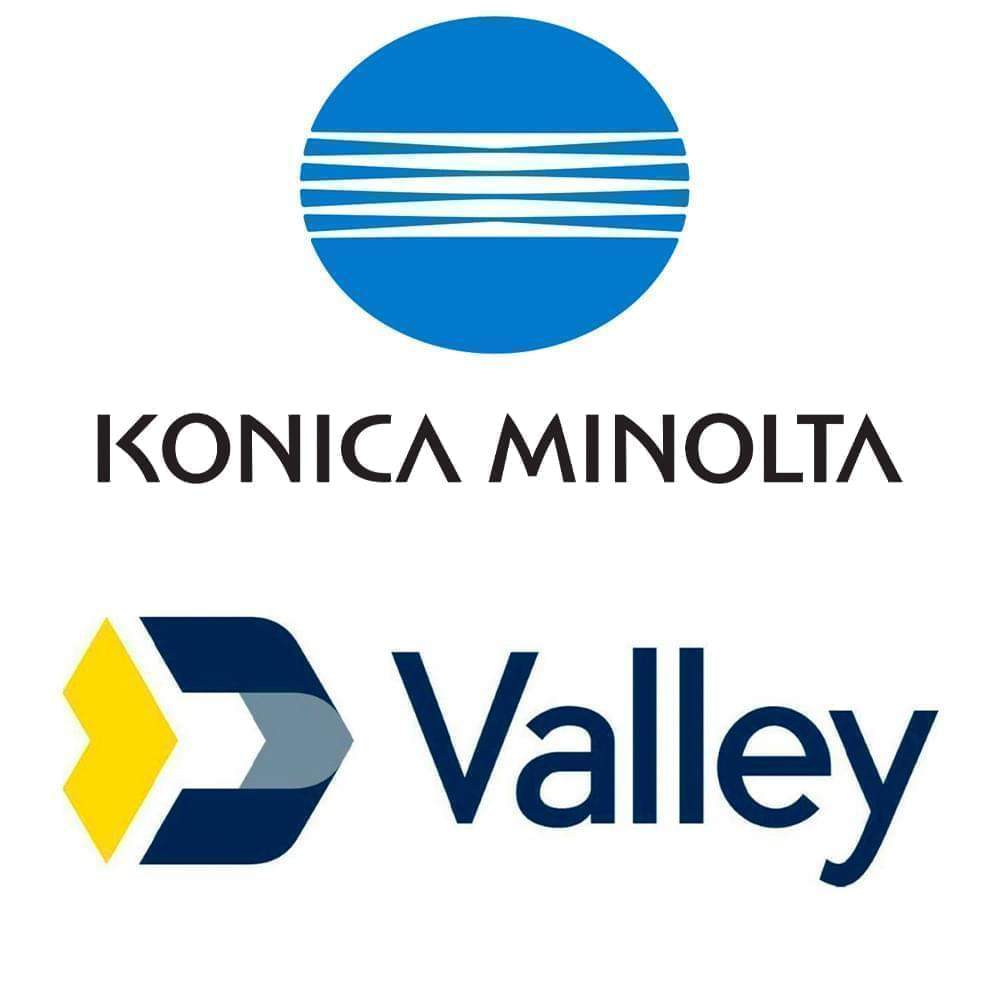

ChrisPaldino
cpaldino20@gmail.com
cpaldino20@gmail.com
About Me
Programmer, photographer, gamer, comic book geek
Education
Junior Computer Science Major at Stevens Institute of Technology

Skills
HTML, CSS, JavaScript, C, Java, Photoshop, Eclipse, MySQL Workbench, Microsoft Office, etc

Work Experience
From data entry to IT to web services to web development

Projects
Discord bots, web redesigns, and web applications